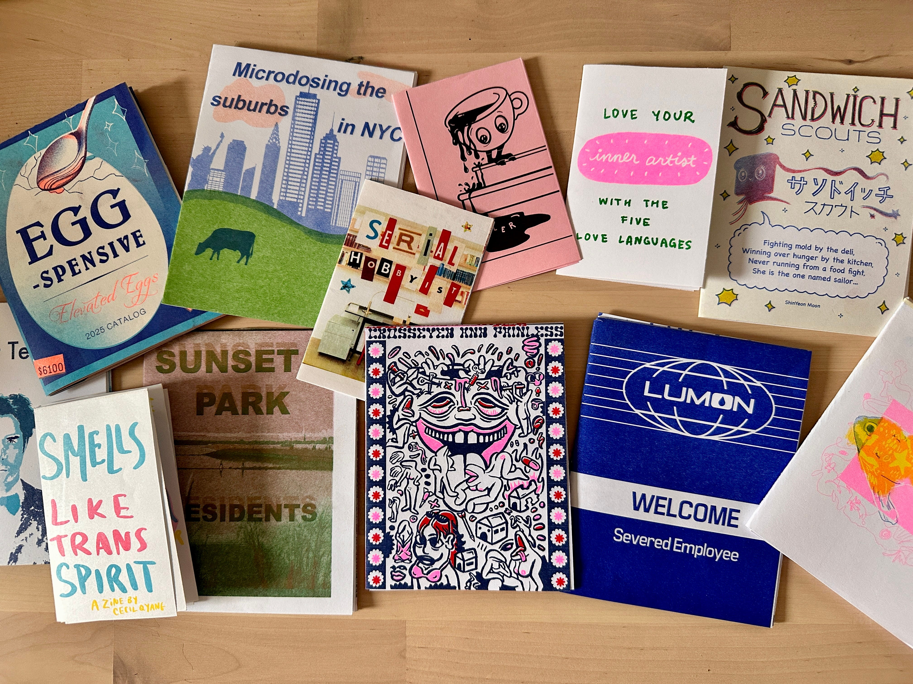
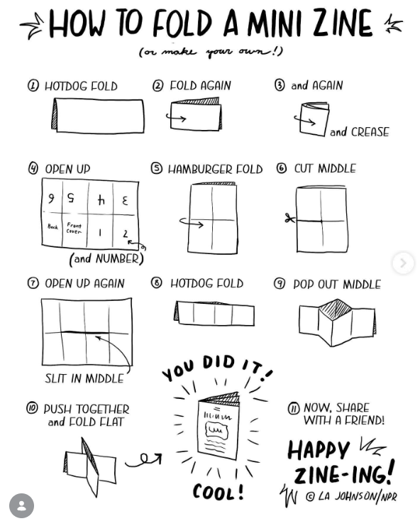

Micro Book Tutorial

Make your own 8-page mini-book or zine! Essentially miniature magazines, micro books are typically self-published by an individual or small group. Zines are really easy and inexpensive to make and are popularly photocopied to be shared within a community.
via the Institute of Contemporary Art, Boston
You'll need…
- Letter sized (8.5” x11”) paper
- Drawing materials
- Scissors
- Glue
- Stickers, magazine cuttings, or other decorative elements
Instructions
- Fold your paper in half, then half again, and then half again. When you open your paper, you should have eight equal sections.
- With the paper completely open, fold it in half with short ends touching. Using scissors, cut halfway across the middle from the fold. When you reopen your paper, there will be a slit in the middle of the sheet.
- Fold the paper lengthwise (long ends touching), hold the paper at either end, and fold the sheet into itself to form an 8-page booklet.
- Use your drawing materials, stickers, and other decorative elements to fill the pages of your book. You can write a story, make a mini comic, or just draw some fun pictures!
